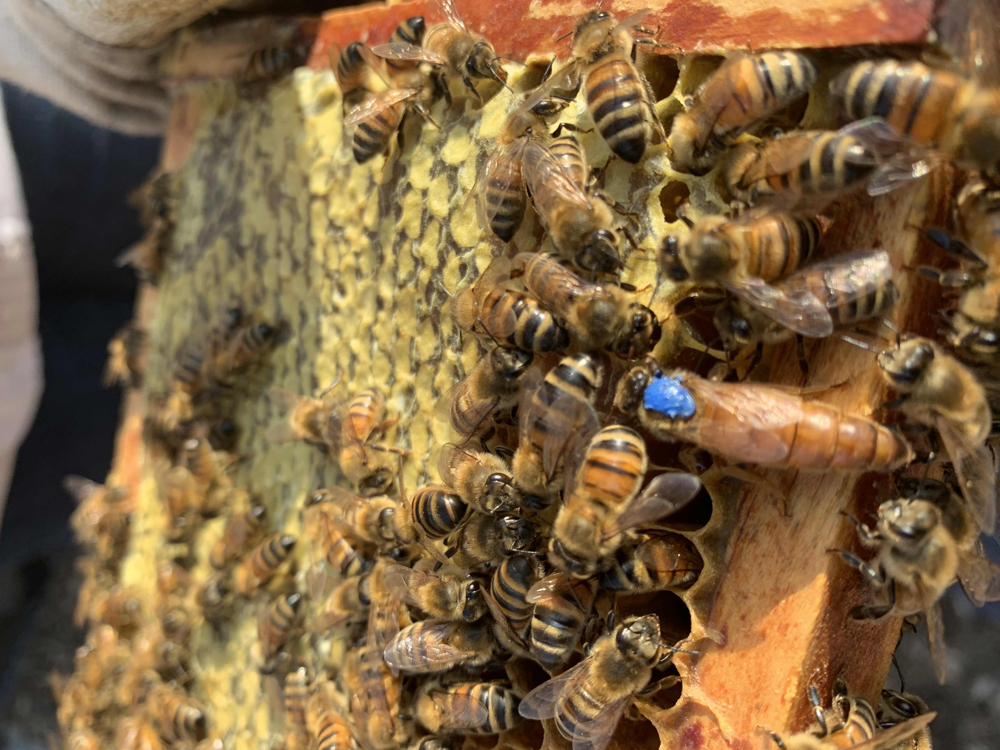
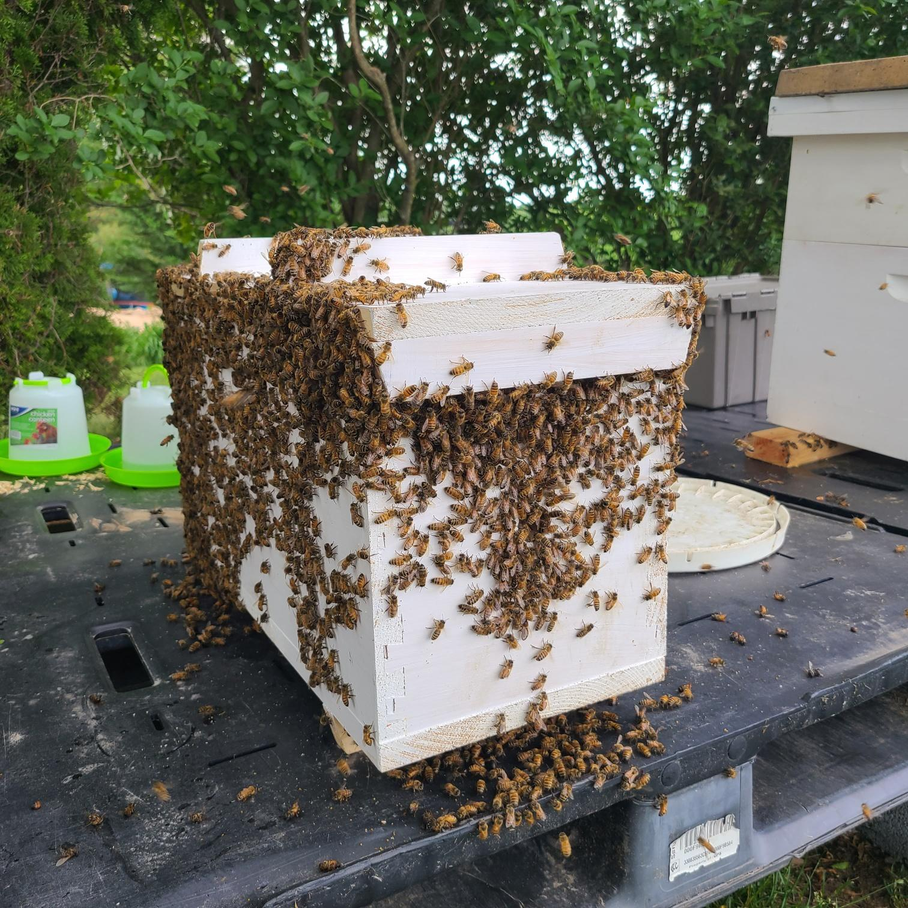

Honey bee nucs & locally raised PA queens
The Alleman Apiary raises and sells nucleus colonies (nucs) and locally adapted Pennsylvania queens from our apiaries in Central PA. Our breeding stock is Northern-raised, overwintered, and selected from survivor genetics — bees that have actually made it through PA winters, not packages flown up from Georgia or California in March. Reservations open each fall with a 50% deposit. Pickup at our apiary in Harrisburg, PA. Limited quantities each spring — reserve early.
Why buy locally raised Pennsylvania queens?
The honey bee queen industry is dominated by Southern producers — Georgia, Florida, Texas, California. They've got the climate to raise queens early in the season, which is great for them. But those queens were bred in mild winters, mated with Southern drones, and selected for traits that work in Southern climates.
Then they ship them up to Pennsylvania in spring, where the new beekeeper is supposed to overwinter them in a climate the queen's lineage has never seen. That's a lot to ask of a queen.
Our queens are raised here. Their mothers overwintered in Central PA. Their drones came from local survivor colonies — bees that have proven they can handle a real PA winter, varroa pressure, and the dearth that hits this region in late summer. Pennsylvania-bred queens are simply better suited to Pennsylvania apiaries. That's not marketing; it's biology.
If you've ever lost a Southern-bred queen by November, you already know the difference.

Nucs & queens
5-Frame Nucleus Colonies (Nucs)
A nuc is a small, established honey bee colony — five deep frames containing a laying queen, brood at multiple stages (eggs, larvae, capped), nurse bees, foragers, and frames of honey and pollen. It's everything a colony needs to grow into a full hive. Drop a nuc into an empty 10-frame deep, feed lightly, and you'll have a productive hive within a season.
Our nucs are built up from overwintered Pennsylvania colonies, headed by mated queens we raised the previous year (or carefully selected this season). They're inspected for disease, varroa-monitored, and treated as needed before sale. Sold on Langstroth deep frames.
Available: spring, typically late April through June · Pickup: our apiary, Harrisburg, PA · Reservations: open in fall, 50% deposit · Quantity: limited each spring
Pennsylvania-Bred Mated Queens
Locally raised, locally mated queens for established beekeepers replacing winter losses, requeening aggressive colonies, or building up new splits. Our queens come from a mixed genetic base — Carniolan, Italian, Russian, and mutt survivor lines selected over multiple generations for traits that matter in Central PA: overwintering ability, mite resilience, gentleness, brood pattern, and honey production.
We don't pretend to sell "pure" anything. Beekeepers who care about pure breeds buy from breeders who specialize in that. We sell working queens for working apiaries. What we promise: healthy, well-mated, marked queens from breeding stock that has proven it can survive and thrive in our climate.
Available: late spring through summer · Pickup: our apiary, Harrisburg, PA · Quantity: limited each season

What you actually get from us
- 5 deep frames including drawn comb, brood at multiple stages, eggs and larvae, nurse and forager bees, and stored food (honey and pollen)
- A laying mated queen — marked when feasible
- Disease and varroa inspection before sale
- Quick walk-through at pickup — we'll show you what to look for, how to install, and what to do in the first two weeks
- Phone/text support — we don't disappear after the sale. Questions about your nuc are part of the deal.
How we price
Pricing varies year to year based on weather, build-up, and demand. We quote nuc and queen prices on request. Call or text 717-379-3248 with how many you're looking for and roughly when you want them, and we'll let you know current availability and pricing. We're typically priced in line with other reputable Northern queen producers — not the cheapest, not the most expensive, in the range that reflects the real cost of raising healthy bees the right way.
How reservations work
Demand for locally raised Pennsylvania queens and nucs exceeds supply most years. To make sure your bees are ready for you in spring, we take reservations starting in fall.
- Reach out in fall or winter — call or text 717-379-3248 with how many nucs and/or queens you want.
- Confirm and pay the 50% deposit — secures your spot in our spring production schedule. Without a deposit, we can't reserve.
- We'll contact you in spring when your bees are ready — typically late April through June for nucs, and late spring through summer for queens. Weather drives the schedule, not the calendar.
- Pick up at our apiary in Harrisburg, PA. Bring your hive box (or buy one from us). Final balance due at pickup.
If circumstances change and you can't take your nuc, we'll refund your deposit minus a small administrative fee, or we can roll your reservation to the following season.
Who buys our bees
New beekeepers
Starting your first or second hive. A nuc is the easiest, most reliable way to start — far better than a package of bees with an unfamiliar queen. We can also help you set up your first hive. See Apiary Services for hands-on mentorship.
Established beekeepers
Replacing winter losses or expanding. Locally raised stock outperforms imported packages over the course of a season.
Sideliners & small commercial
Building up apiaries. Reserve early — we work with sideliners on multi-nuc orders when supply allows.
Beekeepers requeening
A fresh, mated, locally adapted queen often turns around a struggling or aggressive colony.
Nuc & queen FAQ
When are nucs ready in Pennsylvania?
Pennsylvania nucs are typically ready from late April through June, depending on the spring weather, brood buildup, and our overwintered colony strength. Cooler springs push pickup later; warm springs allow earlier pickup. We never release a nuc that isn't strong enough — we'd rather make you wait two weeks than send out a struggling colony.
What's the difference between a package and a nuc?
A package is a screened box containing about 3 pounds of bees and a caged queen — no comb, no brood, no stored food. The bees and queen are unfamiliar with each other and have to start from scratch in your equipment. A nuc is a small, established, working colony — already accepted queen, drawn comb, brood being raised, food stored. Nucs install faster, build up faster, and have a much higher success rate, especially for newer beekeepers. We sell nucs because they work better.
Do you ship nucs or queens?
We do not ship at this time. All nucs and queens are pickup at our apiary in Harrisburg, PA. This isn't because we don't want your business — it's because shipping bees adds stress, risk, and complications that we'd rather not pass along. Local pickup means you get bees that haven't been bouncing around in a USPS truck for three days.
What genetic lines are your queens?
Our breeding stock is a mix of Carniolan, Italian, and Russian heritage with infusions of local survivor genetics from feral colonies, swarms we've collected, and queens that have proven their ability to overwinter in PA. We're not selling "pure" anything — we're selling working bees adapted to working in this climate. If you specifically need a single-race queen (pure Italian, pure Carniolan), we'd direct you to a breeder who specializes in that.
What if my new nuc fails after I pick it up?
Honest answer: once a nuc leaves our apiary, the success of the colony depends on a lot of things outside our control — your equipment, your installation, weather, feeding, your local nectar flow. That said, if a queen we sold dies in the first 30 days for reasons that look like a queen issue (failed mating, supersedure with no brood production), we'll work with you on a replacement when one is available. We stand behind our bees, but the colony is yours once it leaves.
I'm a brand-new beekeeper. Can you help me get set up?
Absolutely. We offer beekeeping mentorship — equipment guidance, hands-on hive walkthroughs, varroa monitoring training, and ongoing seasonal support — for new and developing beekeepers in Central PA. See Apiary Services or just ask when you call to reserve a nuc. New beekeepers who get a nuc plus mentorship from us tend to make it through their first winter, which is the hardest part of beekeeping.
How do I reserve?
Call or text 717-379-3248 in the fall or winter with how many nucs or queens you want and your timing. We'll confirm availability, take a 50% deposit (Venmo, check, cash), and add you to the spring schedule. We'll reach out when your bees are ready.
Reserve your nucs & queens
Limited quantities each spring — first reserved, first served. Pickup at our Harrisburg apiary.
Call or Text 717-379-3248